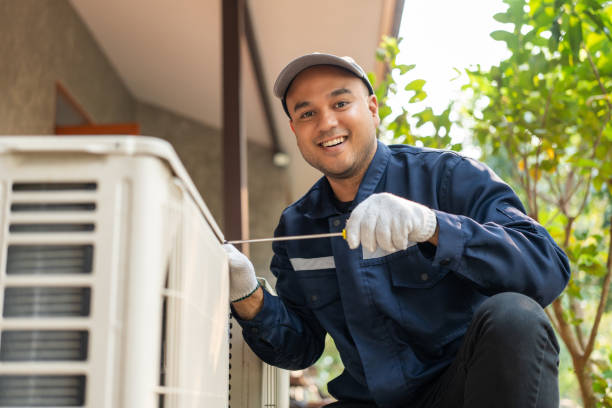

High Bridge New Jersey
info@hullacrepair.xyz
High Bridge New Jersey
info@hullacrepair.xyz

Trusted AC repair experts in High Bridge New Jersey . We specialize in fixing all makes and models, offering prompt service, honest pricing, and superior customer care to keep you cool.
Click Here To Call Us (877) 848-1711Are you experiencing issues with your air conditioning system in High Bridge New Jersey ? At our AC repair company, we provide top-notch, reliable, and fast AC repair services to keep your home or business comfortable, even on the hottest days. Our certified technicians specialize in diagnosing and repairing all makes and models, ensuring your cooling system operates efficiently and effectively.
With years of experience serving High Bridge New Jersey we understand the importance of prompt and professional service. Whether your AC is blowing warm air, making unusual noises, or not turning on at all, our team is ready to tackle any problem with precision and expertise. We offer comprehensive services, including AC maintenance, emergency repairs, and complete system overhauls, tailored to meet your specific needs.
We pride ourselves on transparent pricing, quality workmanship, and excellent customer service. Our goal is to ensure your AC unit runs smoothly, enhancing your comfort and reducing energy costs. Don't let a faulty air conditioner disrupt your comfort; call us today for expert AC repair in High Bridge New Jersey .
Choose our AC repair services for trusted, local expertise in High Bridge New Jersey . We’re committed to keeping you cool, comfortable, and satisfied year-round. Contact us now to schedule an appointment!
Residential & commercial Ac repair
Quality services at affordable prices
Immediate 24/ 7 emergency services


If your AC is not cooling properly, it can be incredibly frustrating, especially during the hottest months in High Bridge New Jersey . Several issues might cause your air conditioner to underperform. One of the most common reasons is a clogged air filter. When filters get dirty, they restrict airflow, making it harder for the system to cool your home efficiently. Regular filter maintenance can prevent this issue and ensure consistent cooling.
Another potential problem is low refrigerant levels. Your AC needs the correct amount of refrigerant to effectively cool your space. A leak in the system can cause a drop in refrigerant levels, leading to warmer air and higher energy bills. Hull AC Repair in High Bridge New Jersey offers professional inspections to detect and fix refrigerant leaks, restoring your AC's optimal performance.
Your AC’s evaporator coils could also be dirty or frozen, hindering the cooling process. Dirt on the coils limits heat absorption, making it difficult for your system to cool the air properly. Regular cleaning by experts from Hull AC Repair ensures your coils stay in top condition.
If you notice that your AC struggles to maintain a cool temperature, it's time to call in the professionals. Hull AC Repair provides fast and reliable AC repair services across all cities in High Bridge New Jersey . Don't wait until a small problem becomes a costly repair—contact us today for an expert diagnosis and efficient solutions.
Residential & commercial Ac repair
Quality services at affordable prices
Immediate 24/ 7 emergency services
Mini-split air conditioning systems offer flexibility and efficiency, perfect for homes without traditional ductwork. Our mini-split AC repair services in High Bridge New Jersey are designed to address the specific challenges these systems may face. Whether you’re experiencing temperature inconsistencies, airflow issues, or unusual noises, our trained technicians will diagnose and fix the problem tailored to your unit's unique needs. We pride ourselves on delivering swift service and effective solutions, making us the top choice for mini-split AC repairs in your area.

The compressor is often considered the heart of your air conditioning system. It is responsible for circulating refrigerant and maintaining the cooling process. If your compressor isn’t functioning correctly, your entire cooling system suffers. Our AC compressor repair services in High Bridge New Jersey are designed to address issues promptly and restore the performance of your air conditioning system.
When you suspect that your compressor is malfunctioning, it’s crucial to seek professional assistance quickly. Our team of skilled technicians specializes in diagnosing and repairing issues related to AC compressors. We understand the complexities involved in compressor repairs and are committed to providing quality service.
What sets our AC compressor repair services apart? Our technicians are equipped with the latest diagnostic tools and techniques to accurately assess compressor issues. We will conduct a comprehensive evaluation of your system to pinpoint the exact problem and recommend the necessary repairs.
We place a strong emphasis on customer education and transparency. Once we’ve diagnosed the issue, our technicians will explain their findings to you and present different repair options. You will always have enough information to make informed decisions to suit your budget and needs.
Quality is key to our service, and we use high-quality replacement parts whenever necessary. By providing reliable repairs with durable components, we aim to enhance the longevity and performance of your air conditioning unit.
Additionally, we understand that compressor issues can arise unexpectedly, which is why we offer flexible scheduling for our repair services. If you’re dealing with a sudden compressor failure, you can trust our team to be there to help you get things back up and running as quickly as possible.
For expert AC compressor repair choose us for fast, reliable, and professional service. We’re dedicated to keeping your home or business comfortable while ensuring your AC system operates at full efficiency.

Installing a new air conditioning system is a significant investment fr your home or business. Choosing the right unit and ensuring it is installed correctly are critical factors that contribute to the efficiency and longevity of your new system. Our air conditioning installation services are designed to provide you with expert guidance and quality workmanship, ensuring you receive the best possible results.
Our process begins with an extensive consultation to evaluate your cooling needs. Our experienced technicians will assess your property, discuss your preferences, and provide recommendations for suitable air conditioning systems. We have a range of options, including central air conditioning, ductless systems, and high-efficiency models, to ensure we find the ideal fit for your space.
Why choose our air conditioning installation services? First and foremost, we prioritize quality and expertise. Our technicians are trained and certified to handle all aspects of installation. We are committed to following industry best practices to ensure that your new system is installed correctly and is fully operational.
Additionally, we believe in transparency throughout the installation process. Our team will explain each step, outline timelines, and ensure you are fully informed. We provide detailed pricing upfront so you can be confident in your investment.
Furthermore, our focus on customer satisfaction means we take great care during the installation process, treating your home or business with respect. Our goal is to create a positive experience, minimizing disruption to your daily life while delivering high-quality results.
Once your new system is installed, we offer ongoing support and maintenance options to help you keep it running smoothly for years to come. Regular maintenance is key to ensuring the efficiency and longevity of your system, allowing you to enjoy the benefits of a reliable air conditioning solution without worry.
, if you're looking for professional air conditioning installation services, trust our experienced team to deliver quality results that keep you comfortable and satisfied. Your comfort is our top priority.
When it comes to air conditioning repairs, having a reliable local technician on your side can make all the difference. Our local AC repair technicians in High Bridge New Jersey bring a wealth of knowledge and expertise to every job, ensuring you receive top-quality service right in your community.
Our technicians are not just skilled; they are also familiar with the specific climate challenges faced . This local expertise allows us to understand the common issues residents encounter and provide tailored solutions that meet the unique needs of our clients.
Why should you choose our local AC repair technicians? We believe in the power of community. Our technicians are committed to building relationships with customers, offering personalized service, and delivering timely repairs. We know that when your AC needs repair, you need a quick response, and our local presence ensures that help is always nearby.
Moreover, our team is trained in the latest HVAC technologies and repair techniques, allowing us to effectively address all sorts of AC issues. From minor repairs to significant malfunctions, our technicians have the skills to ensure your system is functional and efficient.
We also prioritize accessibility and transparency. When you contact our local technicians for an AC repair, you can expect quick turnaround times and upfront pricing. Our technicians will evaluate your system thoroughly, explain their findings, and provide clear estimates for the necessary repair work.
Additionally, fostering local connections means we genuinely care about your satisfaction. Our priority is to ensure your comfort and well-being through every step of the repair process. Our technicians are friendly and polite, taking the time to answer any questions you may have during and after the repair.
Choose our local AC repair technicians in High Bridge New Jersey for prompt, professional, and personalized service. We're dedicated to ensuring you stay cool and comfortable, no matter what issues arise with your air conditioning system.

When your air conditioning unit fails, having local AC repair technicians you can trust makes all the difference. Our team of skilled professionals is based right here in High Bridge New Jersey equipped with the knowledge and tools to provide prompt and effective AC repairs. We prioritize customer satisfaction, which means you’ll receive friendly service, transparent pricing, and high-quality workmanship. Our technicians are familiar with the common issues faced by residents, allowing us to provide faster diagnostics and solutions. Choose our local experts to keep your home or business comfortable and cool year-round.
HVAC emergencies don’t follow a schedule, which is why we offer dedicated HVAC emergency repair services in High Bridge New Jersey . When your heating or cooling system fails at the worst moment, our team is prepared to respond quickly and effectively. We understand that a malfunctioning HVAC system can cause major discomfort and dissatisfaction, so we ensure that our technicians are always on call to provide immediate assistance. With our expertise and commitment to quality service, we stand ready to minimize your discomfort and restore your environment as swiftly as possible.

Clean air ducts contribute significantly to indoor air quality and system efficiency. Our air duct cleaning services ensure that your home or business benefits from a clean and healthy airflow. Dust, allergens, and debris can accumulate in your ducts, diminishing your system's efficiency and compromising air quality. Our trained technicians use specialized equipment to thoroughly clean your ducts, improving your HVAC system's performance and extending its lifespan. Trust us to enhance your indoor environment with professional air duct cleaning services that prioritize your health and comfort.

When it comes to air conditioning repairs, you want the best in the business. At Ac repair, we dedicate ourselves to being the best AC repair company . Our reputation is built on years of providing reliable, high-quality service that exceeds customer expectations. Our team consists of certified technicians who undergo continuous training to ensure they are up-to-date with the latest technologies and best practices. We offer transparent pricing, prompt service, and a commitment to your satisfaction. Choose us as your trusted partner for all your air conditioning needs, and experience the difference that comes with the best in the industry.
Years Experience
Expert Technicians
Satisfied Clients
Compleate Projects
When it comes to AC repair in High Bridge New Jersey Hull AC Repair stands out as the premier choice for homeowners and businesses alike. Our team of certified technicians brings unparalleled expertise and a commitment to excellence, ensuring that every job is completed with precision and care. We understand the critical role your air conditioning system plays in your comfort, which is why we prioritize quick, reliable, and effective solutions tailored to your specific needs.
At Hull AC Repair, we use state-of-the-art diagnostic tools and industry-leading techniques to identify and address issues efficiently. Our transparent pricing model means you’ll receive top-quality service without any hidden costs or surprises. We are dedicated to delivering not just repairs but peace of mind, knowing that your AC system is functioning optimally.
Our customer-centric approach sets us apart. We offer flexible scheduling to fit your busy lifestyle and a commitment to punctuality and professionalism that ensures minimal disruption to your day. Additionally, our comprehensive maintenance services are designed to prevent future problems, extending the lifespan of your system and enhancing its performance.
Choose Hull AC Repair for your AC repair needs in High Bridge New Jersey and experience the difference of working with a company that truly values your comfort and satisfaction. Trust us to keep your environment cool and your system running smoothly, no matter the time of year.
When your air conditioning system malfunctions, the first thing you might search for is AC repair near me. That’s where we come into play! Our team of certified technicians is always ready to provide prompt, professional, and high-quality AC repair services . We understand that a functioning air conditioner is crucial for your comfort, especially during sweltering summer days. Our local presence means we can arrive quickly, ensuring that your home remains a cool sanctuary. Plus, our transparent pricing and dedication to customer satisfaction set us apart as the trusted choice .
Emergencies can happen at any moment, and when your air conditioning fails on a scorching summer day, it can be truly unbearable. If you find yourself searching for emergency AC repair services you need a team that is responsive, reliable, and ready to act quickly. At our company, we specialize in providing emergency HVAC services that you can count on.
Our 24/7 emergency AC repair service is designed to give you peace of mind. Whether it's a complete breakdown, a strange noise, or a sudden leak, our trained technicians are on standby, equipped with the knowledge and tools necessary to resolve the issue efficiently. We understand that air conditioning is not just a luxury; it’s a necessity for your comfort, especially during the intense heat of summer .
When you call us for emergency AC repairs, you will experience our commitment to exceptional service from the moment you reach out. Our customer service representatives are trained to provide fast responses to your inquiries. We will listen to your concerns, gather the essential information, and dispatch a qualified technician to your location immediately.
Why should you choose us for your emergency AC repair needs? We prioritize customer safety and satisfaction above all. Our technicians are certified and insured, with years of experience in handling emergency repairs for all types of AC systems. They arrive on time, ready to diagnose the problem, and present you with the best solutions. We understand the urgency of such situations and act swiftly to restore your comfort.
Don’t let a broken air conditioner ruin your day. With our emergency AC repair services you can trust that you will receive effective solutions without delay, ensuring you and your family are cool and comfortable once again.
An unexpected AC breakdown can put your comfort at risk, especially during extreme heat. Our emergency AC repair services in High Bridge New Jersey are designed to offer immediate solutions when you need them the most. Available 24/7, our dedicated team can swiftly address any situation, no matter how severe. We pride ourselves on our rapid response times and thorough diagnostics to ensure that your air conditioning system is restored promptly and safely.
Central air conditioning systems are complex, and when they break down, it can be overwhelming. Our central air conditioning repair services in High Bridge New Jersey are designed to help restore comfort to your home promptly and professionally. Our technicians have extensive experience dealing with various central AC brands and models, ensuring effective troubleshooting and repairs.
We rely on our customer-centric approach, ensuring all your questions are answered, and that you fully understand our repair process. By using high-quality parts and following best practices, we guarantee long-lasting repairs that optimize your system’s performance.
Maintaining your HVAC system is vital for your home’s comfort, especially in varying climates. Our comprehensive HVAC repair services in High Bridge New Jersey address all heating and cooling issues, ensuring your HVAC system operates at optimal performance. Our experienced technicians can troubleshoot complex problems and develop tailored solutions that meet your specific needs. We use advanced diagnostic tools and techniques to ensure accuracy and reliability in our repairs. We understand that HVAC issues can be costly, so we strive to offer affordable solutions without compromising quality. Choose us as your HVAC repair partner and experience the peace of mind that comes from working with trusted professionals.
At Ac repair, we believe that quality AC repair shouldn't break the bank. Our affordable AC repair services cater to both residential and commercial clients without compromising on quality. We provide transparent pricing with no hidden fees, ensuring that you can enjoy a cool environment without financial stress.
Beyond providing cost-effective solutions, our technicians prioritize achieving durable repairs. We help you maximize the life of your AC system, saving you money in the long run while ensuring maximum comfort. When you choose us, you choose expertise and affordability combined.
Your home should be a comfortable haven, free from the disturbances of an inefficient air conditioning system. Our residential AC repair services are tailored to assess and resolve any cooling issues efficiently. We offer thorough inspections and strive to educate our clients on maintaining their systems. Our commitment to customer service and satisfaction makes us a premier choice for homeowners across High Bridge New Jersey .
Air conditioning problems rarely occur at convenient times. Whether it's a late-night breakdown or a weekend malfunction, you need access to prompt and reliable AC repair services whenever you need them. That’s why we offer 24-hour AC repair services ensuring that help is just a phone call away, no matter the hour.
Our dedicated team of technicians is here to serve you round the clock. We understand that when your air conditioning fails, it can disrupt your comfort, and we are committed to providing timely solutions. In emergency situations, our response time is swift, as we believe you shouldn’t have to suffer in the heat while waiting for help.
Our 24-hour AC repair services are not just about quick fixes; they are about delivering quality workmanship, even under pressure. Each of our technicians is extensively trained and equipped with the tools necessary to diagnose and repair a wide array of AC issues. We handle everything from compressor failures and refrigerant leaks to malfunctioning thermostats and fan problems.
Why should you trust our 24-hour AC repair services? We have built a reputation for reliability and professionalism . We will arrive at your location prepared to identify and resolve your issue as quickly as possible. Transparency continues to be key; our technicians will keep you informed throughout the repair process, ensuring you understand both the problem and the solution.
Furthermore, our commitment to quality means we use only the best components and materials for repairs. We focus on long-term solutions rather than merely patching issues.
In addition to emergency repairs, we also provide preventive maintenance plans. Regular maintenance can help detect potential issues before they become emergencies, ultimately saving you money and keeping your AC operating efficiently.
For 24-hour AC repair services trust us to be your reliable partner, committed to restoring your comfort and peace of mind whenever you need it.
Air conditioning problems can occur unexpectedly, often requiring immediate attention. That’s why we offer 24-hour AC repair services in High Bridge New Jersey . Our dedicated team is available around the clock, ready to respond to your urgent AC repair needs, no matter the time of day or night. We believe that everyone deserves comfort in their home or business, which is why our technicians are always prepared for emergency calls. Trust us to deliver swift and effective repairs any time you need us, ensuring that your air conditioning system is back up and running without delay.
In today’s fast-paced world, waiting for essential home repairs is not an option. Our same-day AC repair services in High Bridge New Jersey are designed for homeowners and businesses that require immediate assistance. We prioritize quick response times, so you don’t have to endure the discomfort caused by a malfunctioning air conditioning system. Our team is dedicated to diagnosing the problem and providing a solution on the same day you call. We value your time and your comfort, making it our mission to restore your cooling system efficiently. Experience the comfort of fast, reliable service with us.
Regular maintenance is vital for the longevity and efficiency of your air conditioning system. Our AC tune-up services include comprehensive inspections and performance enhancements to prevent minor issues from evolving into costly repairs. Our expert technicians will evaluate your system comprehensively, ensuring that all components work efficiently. A well-maintained system can lead to lower energy bills and extended equipment life.
Preventive care is crucial in ensuring your air conditioning system operates smoothly year-round. Our air conditioning maintenance services are designed to help keep your system running efficiently while reducing the chance of unexpected breakdowns.
During our maintenance visits, our technicians will conduct thorough inspections, clean vital components, and offer solutions tailored to your system's needs. By investing in routine maintenance, you can enhance your unit's lifespan and maintain a comfortable indoor climate.
Ductless air conditioning systems offer flexibility and efficiency, but they are not without their challenges. Our ductless AC repair services specialize in addressing issues unique to these systems. Whether it’s a refrigerant leak, electrical problem, or any other malfunction, our expert technicians have the knowledge to tackle it all. We take pride in our thorough diagnostics and quick repairs, ensuring your ductless system operates efficiently once again. When you choose us for your ductless AC repairs, you are choosing experienced professionals committed to high-quality service and customer satisfaction.
Is your AC unit not performing as it should? Our AC unit repair in High Bridge New Jersey targets the specific problems that plague your air conditioning system. Whether your unit is leaking, making strange noises, or simply not cooling properly, our skilled technicians will pinpoint the issue and perform the necessary repairs. Our attention to detail and commitment to quality means that we aim to restore your unit's efficiency as quickly as possible.
Sometimes repair isn’t enough, and replacement is the best option for long-term comfort and efficiency. Our air conditioning replacement services in High Bridge New Jersey guide you through the selection process of a new unit that meets your needs and fits your budget. We ensure proper installation and focus on improving your home's energy efficiency, providing lasting value and comfort for years to come.
If you're experiencing problems with your air conditioning, our air conditioning troubleshooting services in High Bridge New Jersey will help you pinpoint the cause. Our technicians are trained to carry out detailed diagnostics to find the source of the trouble, whether it's technical or mechanical failure. We not only fix the immediate issue but also provide advice on preventing future problems.
Mini-split air conditioning systems offer flexible and efficient cooling solutions for homes and businesses. These systems are becoming increasingly popular due to their ability to cool individual rooms without the need for extensive ductwork. However, issues can arise with mini-split units that require professional attention. Our mini-split AC repair services are designed to swiftly diagnose and resolve any problems you may encounter.
Our trained technicians are equipped with the knowledge and tools necessary to handle various issues that affect mini-split systems. Whether it's a malfunctioning indoor unit or a compressor issue, we have the expertise to provide effective repairs. We understand that consistent comfort is critical, and our team works diligently to restore the functionality of your mini-split AC.
What makes our mini-split AC repair services stand out? We prioritize a thorough diagnostic approach to identify the root cause of any issues. This comprehensive assessment allows us to address the underlying problems rather than merely treating the symptoms. By doing so, we aim to provide lasting solutions that enhance your unit’s efficiency and performance.
Furthermore, we emphasize customer satisfaction through transparency and quality service. When you choose our mini-split AC repair services, we will educate you regarding the problem and the necessary repairs. Our technicians will provide detailed explanations, ensuring you fully understand what is at stake and what steps will be taken.
Additionally, our commitment to quality means we use reliable parts and materials for repairs, ensuring your mini-split system runs efficiently and effectively after servicing. We are dedicated to delivering exceptional repair service and ensuring long-term satisfaction with your air conditioning system.
For those if you're experiencing problems with your mini-split AC system or need prompt, reliable service, trust us to get your system back in optimal condition.
Regular air conditioner maintenance is essential to ensure optimal performance, reduce energy costs, and extend the life of your system. But how often should you service your air conditioner in High Bridge New Jersey ? Experts recommend scheduling AC maintenance at least once a year, ideally before the hot summer months. This annual tune-up allows technicians to inspect and clean crucial components, such as filters, coils, and condensate drains, preventing breakdowns when you need your AC the most.
At Hull AC Repair, we advise homeowners across all cities in High Bridge New Jersey to consider bi-annual maintenance for older or heavily-used systems. Regular servicing not only improves efficiency but also helps catch potential issues early, saving you from costly repairs in the future. During maintenance, our technicians check refrigerant levels, test the thermostat, and ensure all parts are functioning properly. This proactive approach keeps your system running smoothly, even during peak demand.
Neglecting your AC could lead to poor indoor air quality, higher energy bills, and unexpected failures. By scheduling regular service with Hull AC Repair, you can trust that your air conditioner will stay in peak condition year-round.
Ready to keep your AC running efficiently? Contact Hull AC Repair today for expert service across all cities in High Bridge New Jersey . We offer affordable maintenance packages to ensure your home stays cool and comfortable, no matter the season.
High Bridge is a borough in Hunterdon County, in the U.S. state of New Jersey. As of the 2020 United States census, the borough's population was 3,546, a decrease of 102 (−2.8%) from the 2010 census count of 3,648, which in turn reflected a decline of 128 (−3.4%) from the 3,776 counted in the 2000 census.
Hull AC Repair recommends setting your thermostat to around 78°F when you’re home for optimal energy savings and comfort .
While Hull AC Repair focuses on AC repair, we also offer duct cleaning services to improve your indoor air quality and system efficiency.
Hull AC Repair services all major AC brands including Carrier, Trane, Lennox, Goodman, and more.
Regular maintenance, filter changes, and upgrading to a programmable thermostat are some ways Hull AC Repair in High Bridge New Jersey can help improve your AC’s energy efficiency.
Yes, Hull AC Repair provides emergency AC repair services to restore comfort quickly when your AC fails unexpectedly.
Common signs include weak airflow, warm air, strange noises, bad odors, or frequent cycling. Contact Hull AC Repair in High Bridge New Jersey to diagnose and fix the issue.
A higher energy bill may indicate your AC is struggling due to maintenance issues. Hull AC Repair in High Bridge New Jersey can assess and fix the problem.
Yes, Hull AC Repair specializes in repairing ductless mini-split systems providing efficient service for these unique units.
Hull AC Repair recommends servicing your AC unit at least once a year to maintain optimal performance and avoid breakdowns.
Hull AC Repair offers same-day and next-day service for AC repairs depending on availability.
Yes, Hull AC Repair provides 24/7 emergency AC repair services ensuring your system is up and running when you need it most.
If your AC is freezing, turn it off and contact Hull AC Repair in High Bridge New Jersey . This could be due to airflow issues, refrigerant levels, or dirty coils.
Yes, Hull AC Repair offers flexible financing options for larger AC repair and replacement services .
Yes, Hull AC Repair has the expertise to repair older AC units but we also provide advice on when replacement might be more cost-effective.
Short cycling can signal various issues, such as a thermostat problem or a clogged filter. Contact Hull AC Repair in High Bridge New Jersey for an inspection.
In many cases, repairing your AC is more affordable, but Hull AC Repair will recommend replacement if repairs become frequent or costly.
Yes, Hull AC Repair offers comprehensive maintenance plans to help keep your AC system running efficiently year-round.
Most AC repairs by Hull AC Repair can be completed within 1 to 3 hours, depending on the complexity of the issue.
Yes, Hull AC Repair offers free quotes for AC repairs . Contact us to schedule your estimate.
Strange noises could indicate a mechanical issue, such as a loose part or motor failure. Contact Hull AC Repair in High Bridge New Jersey for an immediate inspection.
Yes, Hull AC Repair guarantees all AC repair services in High Bridge New Jersey ensuring your system is fixed right the first time.
AC systems in High Bridge New Jersey generally last between 10 to 15 years with proper maintenance. Hull AC Repair can help maximize your unit’s lifespan.
Signs of low refrigerant include warm air and ice on your AC unit. Hull AC Repair can check and refill refrigerant if necessary.
Yes, Hull AC Repair provides both AC repair and replacement services helping you upgrade to more energy-efficient systems if needed.
If your AC is blowing warm air, contact Hull AC Repair . It could be a refrigerant issue, thermostat problem, or dirty filters.
Hull AC Repair proudly serves all neighborhoods and surrounding areas for AC repair services.
Regular maintenance, filter replacements, and seasonal tune-ups from Hull AC Repair can prevent breakdowns and extend the life of your system.
Hull AC Repair services all types of air conditioning systems including central AC units, ductless mini-splits, and window units.
Yes, Hull AC Repair offers solutions like air purifiers and filtration systems to improve indoor air quality .
The cost of AC repair in High Bridge New Jersey depends on the issue, the system type, and labor involved. Hull AC Repair offers free estimates to provide an accurate quote.
Hull AC Repair delivered top-quality service in High Bridge New Jersey . Their technician was skilled, friendly, and resolved our AC problems swiftly. Great service overall!
Profession
I had a great experience with Hull AC Repair in High Bridge New Jersey . Their technician was efficient, friendly, and fixed our AC promptly. Great job!
Profession
Hull AC Repair provided excellent AC repair service in High Bridge New Jersey . Their technician was on time, explained the issue clearly, and completed the repair efficiently. Very pleased!
Profession
High Bridge NJ Ac repair Pros
(877) 848-1711
info@hullacrepair.xyz
09.00 AM - 09.00 PM
09.00 AM - 12.00 PM